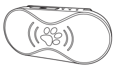

PT-690 寵物追踪器使用手冊
封面

追踪器的綁定
1.在設備中裝入SIM卡
2.啟動設備:按設備開關鍵3秒即可開啟設備
3.登錄航通守護者APP，點擊添加新設備按鈕，選擇綁定PT690（寵物智能防丟器）設備
4.點擊掃一掃圖標，掃描設備背面的二維碼
5.驗證成功後自動完成追踪器的綁定
追踪器介紹
1.指示燈簡介（插入指示燈說明圖片）
2.指示燈狀態說明
| 指示類型 | 顏色 | LED狀態 | 設備工作狀態 |
|---|---|---|---|
| 電源指示燈 | 紅色 | ||
| 熄滅 | 未開機/正常工作 | ||
| 常亮 | 充電中 | ||
| 快閃爍(1秒亮，1秒滅) | 充電完成 | ||
| 慢閃爍(1秒亮，7秒滅) | 低電量 | ||
| GSM指示燈 | 藍色 | ||
| 熄滅 | 未開機 | ||
| 常亮 | 無SIM卡或無GSM網絡 | ||
| 快閃爍(1秒亮，1秒滅) | 有信號正常工作 | ||
| 慢閃爍(1秒亮，7秒滅) | 收發數據 | ||
| GPS指示燈 | 綠色 | ||
| 熄滅 | 未開機/待機 | ||
| 閃爍(1秒亮，1秒滅) | GPS定位成功 | ||
| 常亮 | 正在搜索GPS信號 | ||
| 開機指示 | 三個指示燈同時亮2秒，然後按各自工作狀態進行工作 | ||
| 關機指示 | 紅燈閃爍；1秒亮，1秒滅，1秒亮，關機成功 | < /tr>||
| 備註 | GPS 信號燈亮/滅的時間長短，跟設置的追踪頻率相關 | ||
充電介紹
設備支持主流手機適配器，為環保考慮，所以未配置電源適配器。請選擇合適的適配器給設備充電即可；
充電方法：連接適配器;
紅色LED 快閃表示充電完成紅色LED常亮表示充電中
配件
1.背夾；
2.USB充電線
佩帶方法
將金屬背夾固定在追踪器的背面；
給寵物栓好寵物繩；
將追踪器夾在寵物繩上；
常見問題
1.為什麼無法開機？
答：可能由於電池耗盡導致，請連接充電器充電後再開機。
2.為什麼綁定設備失敗？
答：綁定設備需要在網絡信號良好的情況下進行，請確保網絡信號良好。
3.為什麼定位不成功？
答：設備需要在空曠的位置方可準確定位，請檢查所處的環境；建議首次定位在室外空曠位置進行。
4.為什麼未配置電源適配器
答：設備支持主流手機適配器，為環保考慮，所以未配置電源適配器。
注意事項
1.一個設備僅能被一個賬戶綁定, 可以被主賬戶授權給其他三個賬戶；
2.請將產品遠離火源、高溫高熱等極端環境；
3.本產品在斷電狀態和無網絡服務時，定位功能無法工作。
售後服務
請諮詢當地的業務人員或者我司售後服務中心。
聯繫我們
有任何問題或建議，歡迎您隨時聯繫我們。
中國大陸
官方微信：航通守護者
客服QQ:3106893070
服務熱線：0755-8601 8738
中國香港
服務熱線：+852-26273380
郵箱：cs-liteguardian@castelbeidou.com
海外
郵箱: sales@castelbds.com
公司網頁:www.lite-guardian.com
服務熱線:+8675586018742